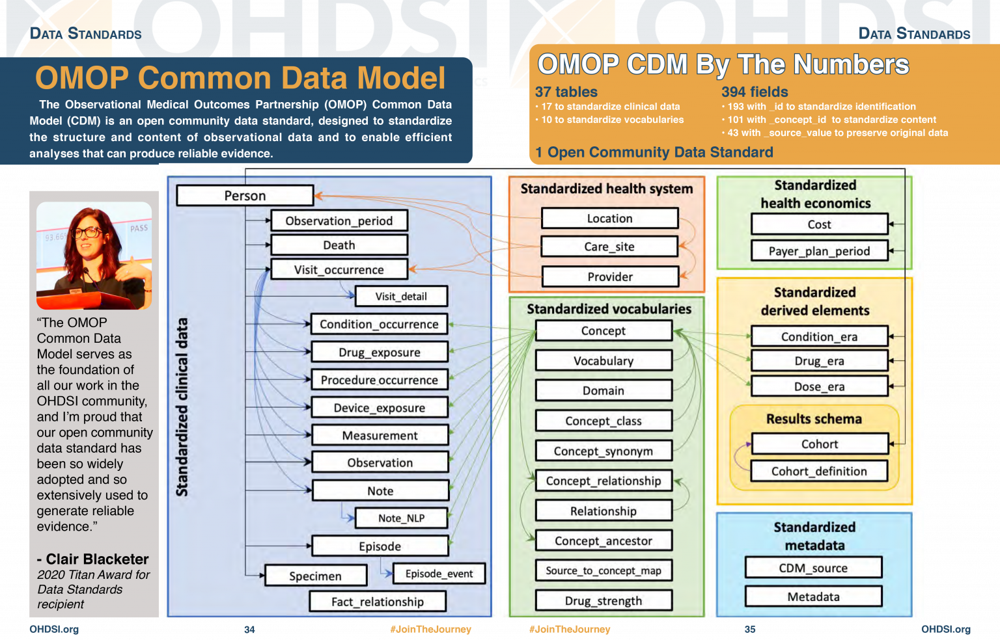

What is OMOP?
Last updated on 2025-07-07 | Edit this page
Estimated time: 0 minutes
Overview
Questions
- What is OMOP?
- What information would you expect to find in the person table?
Objectives
- Examine the diagram of the OMOP tables and the data specification
- Interrogate the data in the person table
Setting up R
Getting started
Since we want to import the files called *.csv into our
R environment, we need to be able to tell our computer where the file
is. To do this, we will create a “Project” with RStudio that contains
the data we want to work with. The “Projects” interface in RStudio not
only creates a working directory for you, but also remembers its
location (allowing you to quickly navigate to it). The interface also
(optionally) preserves custom settings and open files to make it easier
to resume work after a break.
Introduction
OMOP is a format for recording Electronic Healthcare Records. It allows you to follow a patient journey through a hospital by linking every aspect to a standard vocabulary thus enabling easy sharing of data between hospitals, trusts and even countries.
OMOP CDM Diagram

Test yourself
Look at the OMOP-CDM figure and answer the following questions:
- Which table is the key to all the other tables?
- Which table allows you to distinguish between different stays in hospital?
The Person table
The Visit_occurrence table
Why use OMOP?

Once a database has been converted to the OMOP CDM, evidence can be generated using standardized analytics tools. This means that different tools can also be shared and reused. So using OMOP can help make your research FAIR.
Check that everyone knows what FAIR stands for
Some simple tables
Loading Data
Now that we are set up with an Rstudio project, we are sure that the
data and scripts we are using are all in our working directory. The data
files should be located in the directory data, inside the
working directory. Now we can load the data into R, there are three data
files person.csv, condition_occurrence.csv and
drug_exposure.csv. Read each of these into a table with the
same name.
Read the Data
There are three data files person.csv,
condition_occurrence.csv and
drug_exposure.csv. Read each of these into a table with the
same name.
NOTE: The data does have headers.
R
person <- read.csv(file = "data/person.csv", header = TRUE)
condition_occurrence <- read.csv(file = "data/condition_occurrence.csv", header = TRUE)
drug_exposure <- read.csv(file = "data/drug_exposure.csv", header = TRUE)
When you have read in the data, take some time to explore it.
Adding concept names
You will have noticed that content of the tables are not terribly easy to understand. This is because everything in OMOP is viewed as a concept that allows it to be related to one or more standard vocabularies such as SNOMED, ICD-10, etc.
We have developed a package that makes it very easy to add concept names to the tables.
You will need the function omopcept::omop_join_name_all(). This will look up the concept_id in the main table of concepts and add a column for the name of the concept associated with that id.
Who’s who?
By creating tables that also have the name of the concepts answer the following questions
- How old is the black gentleman?
- In which month was an unspecified fever prevalent in the hospital?
- What was the ethnicity of the patient not affected by this fever?
- Give a description of the patient who received Amoxicillin because they were wheezing?
R
person_named <- person |> omop_join_name_all()
ERROR
Error in omop_join_name_all(person): could not find function "omop_join_name_all"R
condition_occurrence_named <- condition_occurrence |> omop_join_name_all()
ERROR
Error in omop_join_name_all(condition_occurrence): could not find function "omop_join_name_all"R
drug_exposure_named <- person |> omop_join_name_all()
ERROR
Error in omop_join_name_all(person): could not find function "omop_join_name_all"- 25 (or 24 if he hasn’t had his birthday this year)
- July
- Don’t know - it hasn’t been specified
- A 53/54 white female
Joining and interrogating the tables
Using join
We established when looking at the diagram that the person table was the key to accessing all the other tables. Infact it is the![.] person_id column that is the actual key that will allow us to join with other tables.
So we can join two of the tables together to get information about the different conditions suffered by each person.
[R documentation - join][join]
I am going to use a left join because I want a record of every person and the conditions they may have.
R
person_condition <-
person_named |>
left_join(condition_occurrence_named, by = join_by(person_id) )
ERROR
Error in left_join(person_named, condition_occurrence_named, by = join_by(person_id)): could not find function "left_join"This produces a new table with all the column names from both tables and six rows.
Using count
Challenge
Count the number of people with each condition
R
person_condition |> count(gender_concept_name, condition_concept_name)
ERROR
Error in count(person_condition, gender_concept_name, condition_concept_name): could not find function "count"This produces a table:

Key Points
- Using a standard makes it much easier to share data
- OMOP uses concepts to link dated to standard vocabularies
- Run
sandpaper::check_lesson()to identify any issues with your lesson - Run
sandpaper::build_lesson()to preview your lesson locally